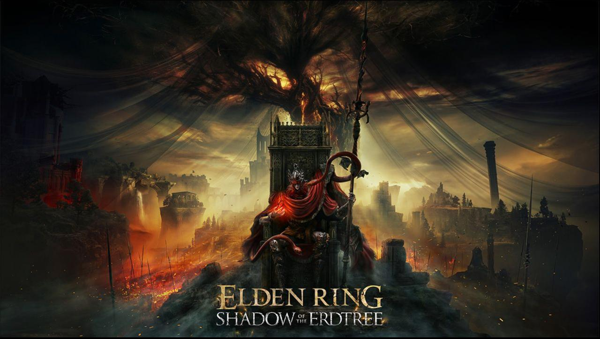
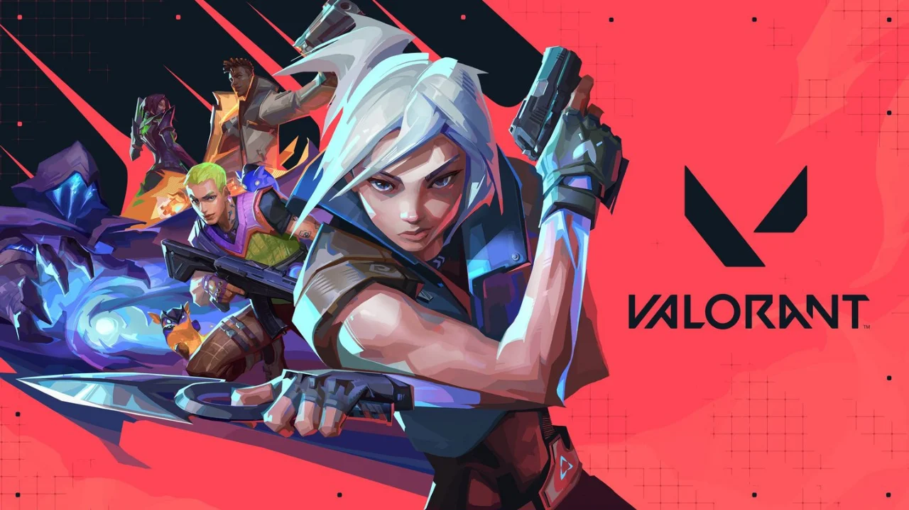
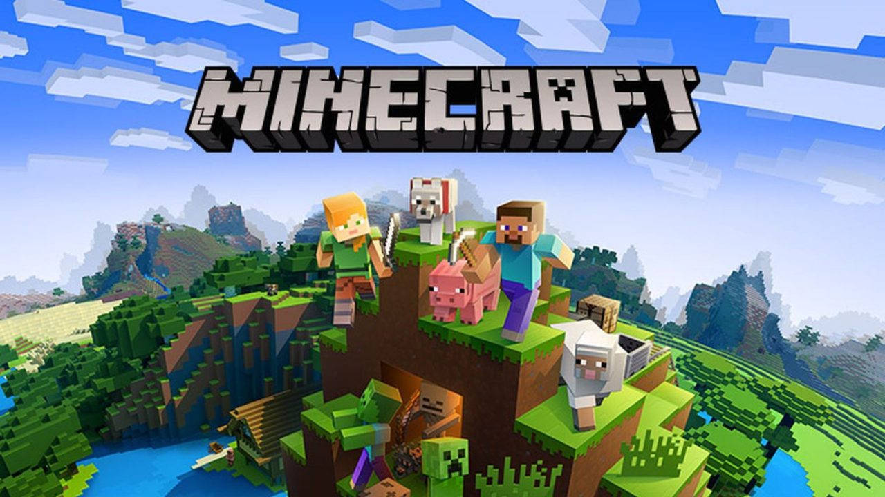
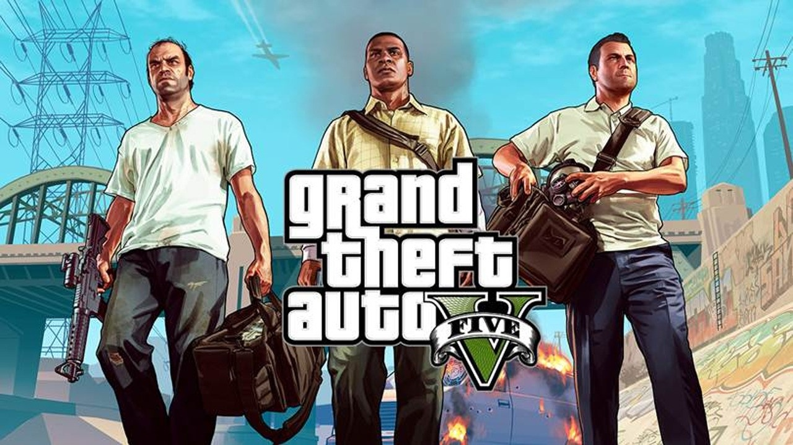
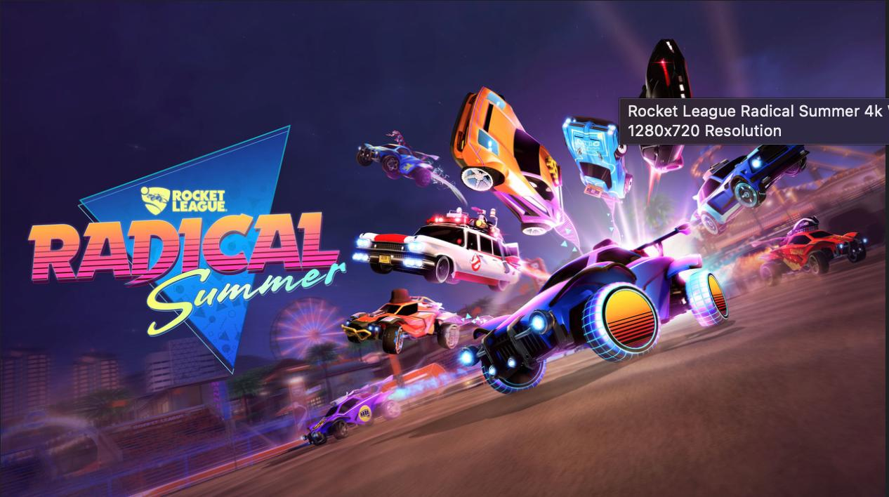
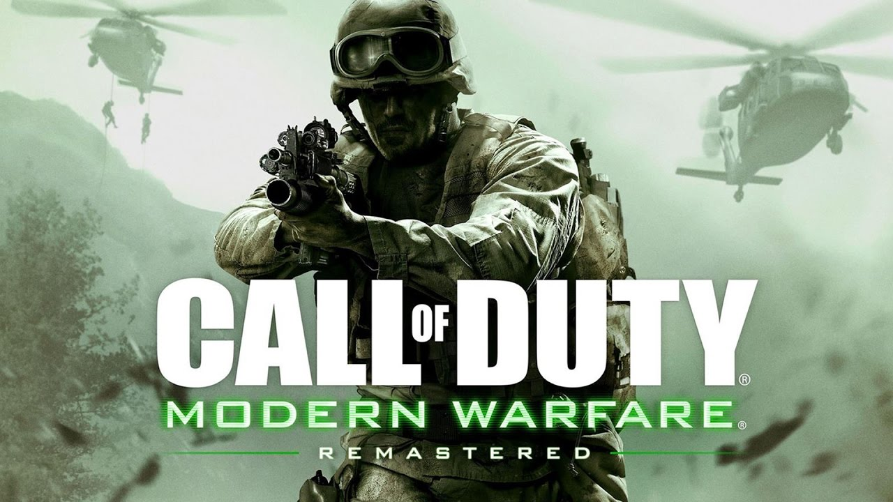

God of War
Detalhes: Jogo de ação e aventura com uma história centrada em Kratos, um guerreiro espartano que se
vê envolvido com os deuses nórdicos.
O jogo mistura combate brutal com uma narrativa envolvente
sobre redenção, paternidade e mitologia. A série foi inovadora em seu formato de câmera fixa, que
segue Kratos em tempo real sem cortes.
Fun Fact: O criador da série, David Jaffe, inicialmente imaginou Kratos como um personagem com
cabeça de "esquilo gigante", mas ao longo do desenvolvimento, o design foi mudando até que Kratos se
tornasse o icônico anti-herói que conhecemos hoje, inspirado por figuras mitológicas e heróis
trágicos.

Elden Ring
Detalhes: Desenvolvido pela FromSoftware e com colaboração de George R.R. Martin (autor de "Game of
Thrones"), é um RPG de ação em um mundo aberto. O jogo tem uma história enigmática e é conhecido por
seu alto nível de dificuldade. Ele mistura exploração de mundo aberto com combate desafiador e uma
grande variedade de inimigos e chefes.
Fun Fact: O jogo foi inspirado por “Dark Souls”, mas tem uma liberdade de exploração muito maior,
incluindo cavalos que permitem viagens rápidas, e foi descrito como o "Dark Souls em um mundo
aberto".

Valorant
Detalhes: Jogo de tiro tático multiplayer em primeira pessoa desenvolvido pela Riot Games. A
proposta é que equipes de cinco jogadores se enfrentem em partidas competitivas, onde cada jogador
escolhe um "agente" com habilidades especiais. A comunicação e a estratégia de equipe são essenciais
para a vitória.
Fun Fact: A personagem brasileira Raze, de "Valorant", é uma baiana cheia de personalidade e
explosões! Ela foi inspirada pela cultura vibrante da Bahia e é conhecida por suas habilidades
explosivas. Seu sotaque e personalidade foram baseados em uma mistura de referências culturais
brasileiras, e a Riot Games fez um grande esforço para garantir que a representação de Raze fosse
autêntica, incluindo o uso de uma dubladora brasileira para dar vida à personagem.

Minecraft
Detalhes: Jogo de sandbox onde o jogador pode explorar, minerar, criar e sobreviver em um mundo
gerado aleatoriamente. A jogabilidade foca na construção e na coleta de recursos, enquanto os
jogadores enfrentam criaturas, como zumbis e esqueletos. Há também modos de sobrevivência e
criativo, sendo possível até jogar multiplayer com amigos.
Fun Fact: O "Creeper", um dos monstros mais icônicos do jogo, foi criado acidentalmente. O
desenvolvedor Markus "Notch" Persson tentou criar um porco, mas errou ao modelar o corpo, criando um
inimigo que acabou se tornando um símbolo do jogo.

GTA V (Grand Theft Auto V)
Detalhes: Um jogo de ação e aventura de mundo aberto, desenvolvido pela Rockstar North e lançado em
2013. É o quinto título principal da famosa série Grand Theft Auto, e é ambientado na fictícia
cidade de Los Santos, inspirada em Los Angeles. O jogo é notável por sua enorme liberdade de
exploração, gráficos detalhados, e uma narrativa cativante.
Fun Fact: Em GTA V, a cidade fictícia de Los Santos é inspirada em Los Angeles, e seus
desenvolvedores passaram anos estudando e digitalizando a cidade real. A Rockstar Games usou imagens
aéreas, mapas e até escaneamento 3D para criar uma réplica detalhada do cenário. Além disso, a
equipe de desenvolvimento gastou mais de um ano apenas trabalhando no design do ambiente, o que
resultou em uma das representações mais realistas de uma cidade no mundo dos videogames.

Rocket League
Detalhes: Jogo que mistura futebol com veículos controlados por jogadores, onde equipes tentam
marcar gols usando carros em uma arena. A física e os controles permitem acrobacias aéreas, saltos e
manobras complexas. O jogo é simples de entender, mas difícil de dominar, com uma comunidade ativa e
modos variados.
Fun Fact: Originalmente, "Rocket League" foi inspirado por "Supersonic Acrobatic Rocket-Powered
Battle-Cars", um jogo semelhante lançado pela Psyonix em 2008, mas "Rocket League" foi um sucesso
muito maior, tornando-se um dos esportes eletrônicos mais populares.
Brawlhalla
Detalhes: Jogo de luta estilo plataforma (como Super Smash Bros.), onde os jogadores controlam
personagens e tentam derrubar os adversários fora da arena. O jogo é gratuito e tem uma grande
variedade de personagens e modos de jogo, incluindo suporte a multiplayer local e online.
Fun Fact: "Brawlhalla" é um dos jogos de luta mais jogados do mundo e é especialmente popular entre
streamers, sendo destaque no Twitch em várias ocasiões.
Fortnite
Detalhes: Jogo de batalha real onde 100 jogadores competem para ser o último sobrevivente em uma
ilha, utilizando armas, itens e até construindo estruturas. O jogo é famoso por sua jogabilidade
dinâmica, com a possibilidade de construir e destruir construções durante as batalhas.
Fun Fact: Em 2018, Fortnite fez história ao colaborar com a Marvel, introduzindo o Thanos como um
personagem jogável no modo "Infinity Gauntlet". Durante esse evento, os jogadores podiam encontrar e
usar o Manopla do Infinito, que dava poderes imensos ao jogador, transformando-o no próprio Thanos.
A colaboração foi um sucesso tão grande que abriu portas para muitas outras parcerias épicas no
jogo, incluindo com Star Wars, Travis Scott e até a DC Comics.

Call of Duty
Detalhes: Série de jogos de tiro em primeira pessoa com vários títulos que abrangem diferentes
períodos históricos e cenários militares modernos. Com modos de campanha, multiplayer e zumbis,
"Call of Duty" tem sido um dos maiores jogos de FPS (tiro em primeira pessoa) da indústria, sendo
especialmente popular em suas edições online competitivas.
Fun Fact: Em "Call of Duty: Modern Warfare" (2007), a missão "All Ghillied Up" é considerada uma das
mais memoráveis da franquia. Ela coloca o jogador em uma missão furtiva usando um traje de
camuflagem, esgueirando-se por uma cidade de Pripyat, na Ucrânia, um local real e famoso pela
tragédia de Chernobyl. A missão foi tão impactante que muitos consideram uma das melhores
experiências de stealth em jogos de tiro.
The Last of Us
Detalhes: Jogo de ação e aventura com foco em narrativa, onde os jogadores controlam Joel e Ellie
enquanto atravessam uma América pós-apocalíptica dominada por criaturas infectadas e facções humanas
hostis. A relação entre os personagens principais é central, com temas de sobrevivência, sacrifício
e moralidade.
Fun Fact: A cena de abertura do primeiro "The Last of Us" foi criada para ser uma experiência
emocional intensa, e o jogo foi amplamente elogiado por suas cenas cinematográficas e a complexidade
de seus personagens.